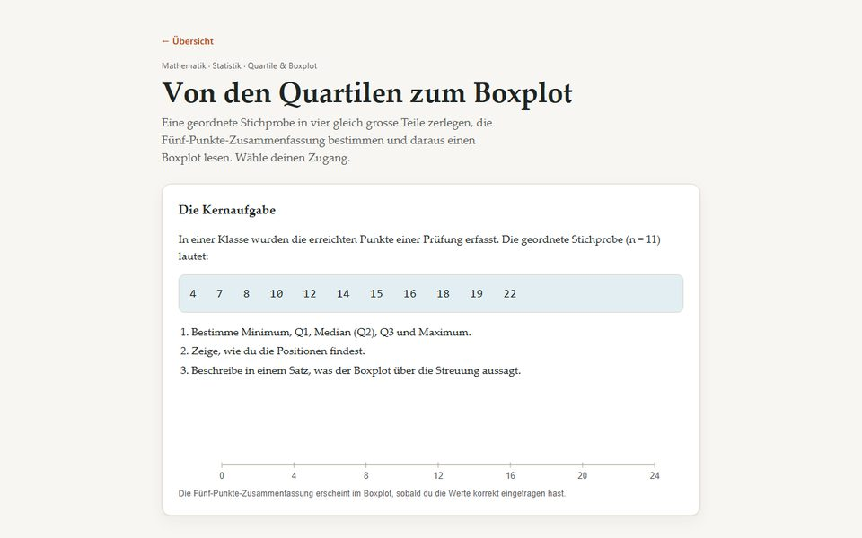
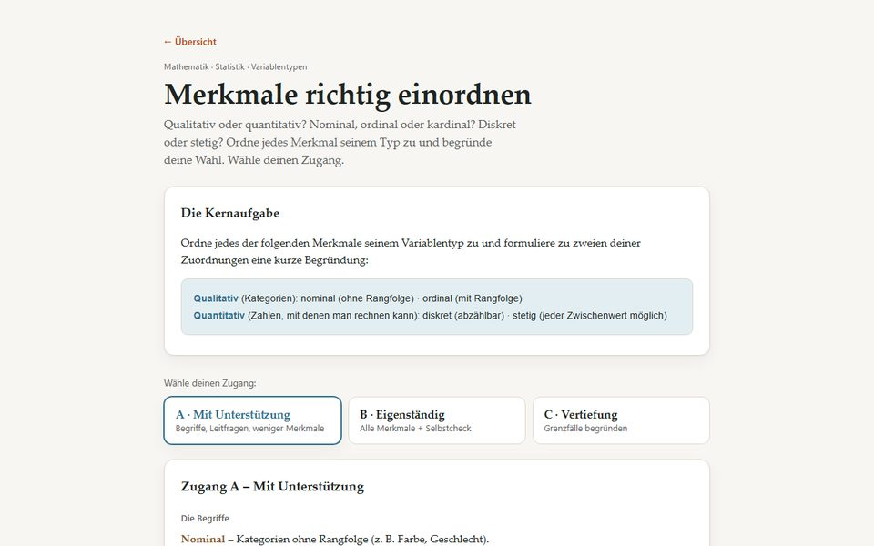
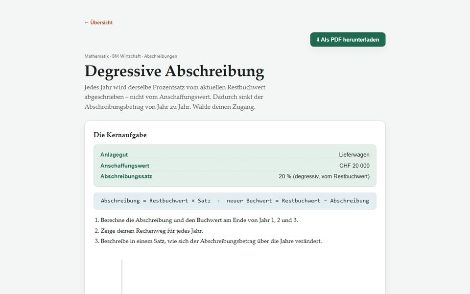
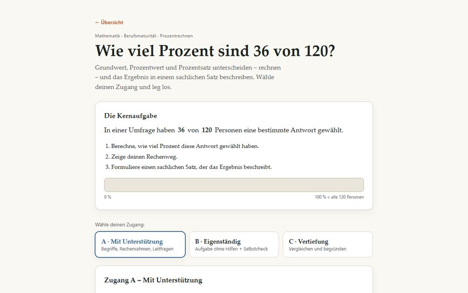
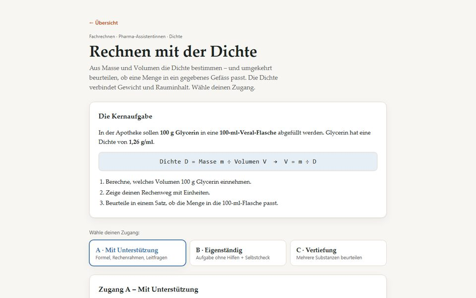
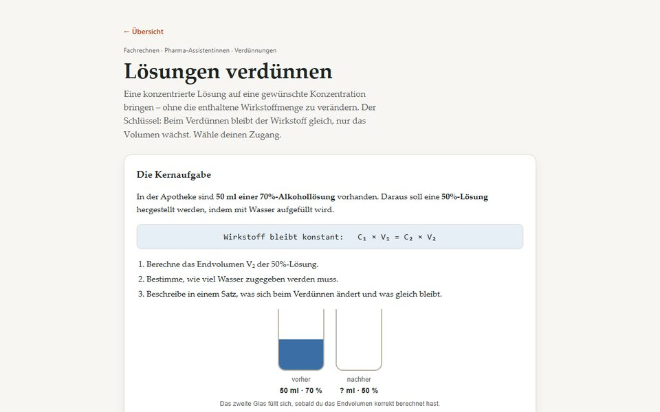
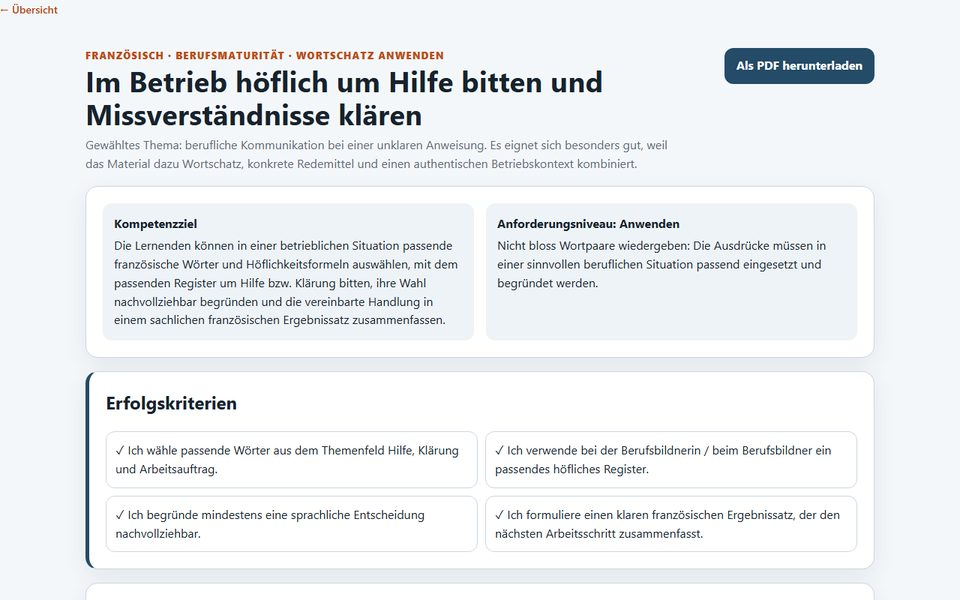
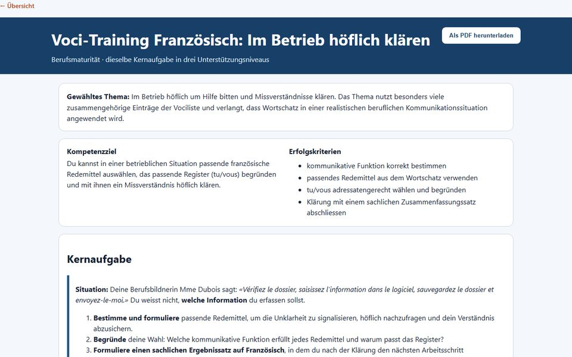

Beispiele · Lernseiten
14 Lernseiten aus sechs Fachbereichen
Jede Seite ist mit dem Prompt-Generator und eigenem Material entstanden: drei Zugänge A, B und C, Selbstkontrolle, Lösungen für die Lehrperson. Öffnen, ausprobieren, als Vorlage für das eigene Fach nehmen.
Mathematik & Statistik · Berufsmaturität
Rechnen und Daten
Verfahren üben mit Selbstkontrolle und einem Aha-Moment in der Vertiefung.

Lagemasse
Mittelwert, Median, Modus. Vertiefung: Wie ein Ausreisser die Masse verschiebt.

Quartile & Boxplot
Fünf-Punkte-Zusammenfassung mit gezeichnetem Boxplot. Vertiefung: IQR & Robustheit.

Variablentypen
Nominal, ordinal, diskret, stetig zuordnen. Vertiefung: Grenzfälle wie die Postleitzahl.

Degressive Abschreibung
Buchwertverlauf über drei Jahre. Vertiefung: Vergleich mit der linearen Methode.

Prozentrechnen
Grundwert, Prozentwert, Prozentsatz. Vertiefung: gleicher Anteil trotz anderer Zahlen.
Medizinisches Rechnen · Pharma-Assistentinnen
Fachrechnen in der Apotheke
Berufstypische Aufgaben – mit der im Lehrmittel geforderten Plausibilitätsprüfung.

Dosisberechnung
Von mg/kg zur ml-Menge. Vertiefung: Dosierungsfehler erkennen, bevor sie zum Kunden gelangen.

Rechnen mit der Dichte
Masse, Volumen, Dichte. Vertiefung: Passt die Einwaage in die Flasche? Faustregel entdecken.

Verdünnungen
C₁·V₁ = C₂·V₂. Vertiefung: typische Denkfehler beim Verdünnen entlarven.
IT-Security · Sek II & Berufsbildung
Persönliche Sicherheit
Erkennen und beurteilen statt rechnen – dieselbe Differenzierungslogik, anderer Aufgabentyp.

Künstliche Intelligenz · Sekundarstufe II
KI verstehen und einordnen
Nicht Jahreszahlen auswendig lernen, sondern das Prinzip hinter einem KI-System erkennen.

Fremdsprachen · Berufsbildung
Französisch im Betrieb
Dasselbe Thema in mehreren Formaten – differenzierte Lernseite und ein Vokabelspiel mit Levels.

Höflich um Hilfe bitten
Redemittel für den Berufsalltag: klären, nachfragen, sich entschuldigen. Mit drei Zugängen.

Berufsmaturität – Variante
Dasselbe Thema, zugeschnitten auf die BM. Zeigt, wie ein Prompt für verschiedene Stufen anpasst.

Voci-Mission (Spiel)
Vokabeltraining in vier Levels: erkennen → erinnern → schreiben → anwenden. Mit Punkten und Serie.
Pflege · Berufsbildung
Fachsprache in der Pflege
Präzise dokumentieren – eine Kernkompetenz im Pflegealltag.